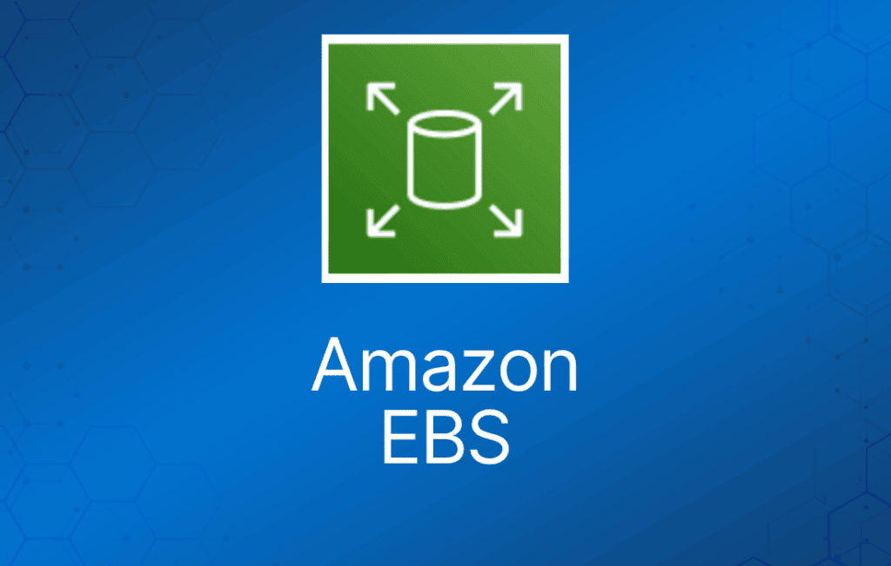
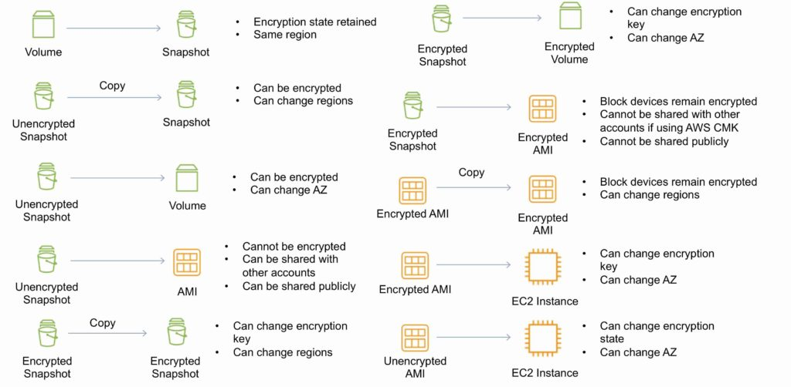

EBS 即 Amazon Elastic Block Store（弹性块存储）。
EBS volume 是可以挂载到 EC2 实例的网络附加存储。
EBS volume 中的数据独立于实例的生命周期而持久存在。
EBS volume 不一定要挂载到实例上。
一个实例可以挂载多个 EBS volume。
在特定约束下，一个 EBS volume 也可以挂载到多个实例。
如果你需要在多个 EC2 实例之间共享卷，大多数场景应使用 Amazon EFS。
EBS volume 的数据会在一个 AZ 内的多台服务器之间复制。
EBS volume 必须与其挂载的实例位于同一 AZ。
EBS 设计的年故障率为 0.1%-0.2%，SLA 为 99.95%。
终止保护（termination protection）默认关闭，需手动开启（开启后实例被终止时卷/数据会保留）。
根 EBS volume 默认在实例终止时被删除。
额外的非启动卷默认在实例终止时不会被删除。
可以通过修改 “DeleteOnTermination” 属性来改变该行为。
现在可以创建带有加密的根/启动卷和数据卷的 AMI（每个卷还可以使用不同的 CMK）。
卷大小和类型可以在不停机的情况下升级（magnetic standard 除外）。
Elastic Volumes 允许你在卷使用过程中增大卷大小、调整性能或更改卷类型。
要在 AZ 之间迁移卷，先创建快照，然后在另一个 AZ 从该快照创建新卷（过程中可以更改大小和类型）。
Auto-enable IO 设置可避免 AWS 检测到数据不一致时自动停止磁盘 IO。
根设备创建在 /dev/sda1 或 /dev/xvda 下。
Magnetic EBS 适用于需要吞吐量而非 IOPS 的工作负载。
吞吐量优化型 EBS volume 不能作为启动卷。
你启动的每个实例都有一个关联的根设备卷，可以是 Amazon EBS volume 或 instance store volume。
你可以使用 block device mapping 在实例启动时指定要挂载的额外 EBS volume 或 instance store volume。
你也可以向运行中的实例挂载额外的 EBS volume。
EBS volume 的大小不能缩小。
更换卷时，新卷的大小必须至少与当前卷的快照一样大。
镜像可以设为公开，但加密的镜像不行。
AMI 可以与其他账户共享。
默认情况下最多可拥有 5,000 个 EBS volume。
默认情况下最多可拥有 10,000 个快照。
Instance Store
Instance store 为实例提供临时性（非持久化）的块级存储。
这与提供持久化存储的 EBS 不同，不过 instance store 同样是块存储服务，也可以用作根卷或附加卷。
Instance store 的存储位于物理上直接连接宿主机的磁盘上。
Instance store 非常适合存储频繁变化的临时信息，例如缓冲区、缓存、临时数据等，或者适合在实例集群间复制的数据，例如负载均衡的 Web 服务器池。
instance store volume 只能在启动实例时指定。
instance store volume 无法从一个实例卸载后再挂载到另一个实例。
实例类型决定了 instance store 的可用大小以及其使用的硬件类型。
instance store volume 的费用已包含在实例使用费中。
某些实例类型使用基于 NVMe 或 SATA 的固态硬盘（SSD）来提供高随机 I/O 性能。
当你需要极低延迟的存储、但不要求实例终止后数据持久保留，或可以利用容错架构时，这是不错的选择。
考试提示：instance store 性能非常高、延迟非常低。如果你能承受实例丢失（即数据有副本），对于高性能/低延迟需求它们是不错的方案。注意题目中提到需要高 I/O 的分布式或复制型数据库。另外记住 instance store 的费用已包含在实例费用中，因此相比 EBS Provisioned IOPS 可能更具成本效益。
EBS 与 Instance Store 对比
EBS-backed 表示根卷是 EBS volume，存储是持久化的。
Instance store-backed 表示根卷是 instance store volume，存储不是持久化的。
在 EBS-backed 实例上，默认行为是终止实例时删除根 EBS volume。
Instance store volume 有时也称为 Ephemeral 存储（非持久化）。
Instance store backed 实例无法停止（stop）。如果底层宿主机故障，数据将丢失。
Instance store volume 的根设备是从存储在 S3 上的 AMI 模板创建的。
EBS backed 实例可以停止。实例停止后数据不会丢失（持久化）。
EBS volume 可以卸载并重新挂载到其他 EC2 实例。
EBS volume 的根设备从由 EBS 快照支持的 AMI 启动。
Instance store volume 无法卸载/重新挂载。
两种类型的实例重启（reboot）时数据都不会丢失。
默认情况下，两种根卷都会在实例终止时被删除，除非你另行配置。
EBS Volume 类型
SSD，通用型 – gp2/gp3：
- 卷大小 1 GiB 到 16 TiB。
- 每卷最高 16,000 IOPS。
- 性能：
- gp2 为 3 IOPS/GiB。
- gp3 最高 500 IOPS/GiB。
- 可作为启动卷。
- 不支持 EBS multi-attach。
- 使用场景：
- 低延迟交互式应用。
- 开发和测试环境。
SSD，预置 IOPS – io1/io2：
- 超过 16,000 IOPS。
- 每卷最高 64,000 IOPS（Nitro 实例）。
- 其他实例类型每卷最高 32,000 IOPS。
- 性能：
- io1 最高 50 IOPS/GiB。
- io2 最高 500 IOPS/GiB。
- 可作为启动卷。
- 支持 EBS multi-attach。
- 使用场景：
- 需要持续 IOPS 性能或超过 16,000 IOPS 的工作负载。
- I/O 密集型数据库工作负载。
HDD，吞吐量优化型 – (st1)：
- 频繁访问、吞吐密集型、大数据集和大 I/O 尺寸的工作负载，如 MapReduce、Kafka、日志处理、数据仓库和 ETL 工作负载。
- 吞吐量以 MiB/s 计量，每 TB 可突发至 250 MiB/s，基线吞吐量为每 TB 40 MB/s，每卷最大吞吐量 500 MiB/s。
- 不能作为启动卷。
- 不支持 EBS multi-attach。
HDD，冷数据型 – (sc1)：
- 成本最低的存储——不能作为启动卷。
- 访问频率较低的大型冷数据集工作负载。
- 每 TiB 可突发至 80 MiB/s，基线吞吐量为 12 MiB/s。
- 不能作为启动卷。
- 不支持 EBS multi-attach。
EBS 优化实例：
- 为 Amazon EBS I/O 提供专用带宽。
- EBS 优化实例设计上兼容所有 EBS volume 类型。
- 最大带宽：400 Mbps – 12000 Mbps。
- IOPS：3000 – 65000。
- GP-SSD 99.9% 的时间内性能在基线和突发性能的 10% 以内。
- PIOPS 99.9% 的时间内性能在基线和突发性能的 10% 以内。
- 收取额外的小时费用。
- 仅部分实例类型可用。
- 某些实例类型默认启用 EBS 优化。
以下是 AWS 考试中最常出现的 EBS volume 类型：
Amazon EBS 快照
快照捕获实例在某个时间点的状态。
是一种经济且简单的备份策略。
可以与其他用户或账户共享数据集。
可用于将系统迁移到新的 AZ 或区域。
可用于将未加密的卷转换为加密卷。
快照存储在 Amazon S3 上。
不提供细粒度备份（不能替代备份软件）。
如果你定期对卷做快照，快照是增量的，即新快照只保存自上次快照以来设备上发生变化的数据块。
虽然快照是增量保存的，但快照删除过程的设计使得你只需保留最新的快照即可恢复卷。
快照只能通过 EC2 API 访问。
EBS volume 是 AZ 级别的，而快照是区域（region）级别的。
从 EBS 快照创建的卷大小可以与快照相同或更大。
可以在实例运行期间对非根 EBS volume 做快照。
要做一致性快照，写入操作必须暂停，直到快照完成。如果无法做到，需要先卸载卷；如果是 EBS 根卷，则必须停止实例。
为了降低 S3 上的存储成本，可以创建一次完整快照，之后做增量更新。
你需要为到 S3 的数据传输流量和 S3 存储付费。
只有变化的数据块会计费。
删除快照只会移除其他快照不需要的数据。
可以通过恢复快照来调整卷大小（做快照时配置不同的大小）。
快照可以在区域之间复制（并可加密）。然后在目标区域从快照创建镜像，从而生成可用于启动实例的 AMI。
可以从快照创建卷，并选择区域内的可用区。
加密
你可以加密 EC2 实例的启动卷和数据卷。当你创建加密的 EBS volume 并将其挂载到受支持的实例类型时，以下类型的数据会被加密：
- 卷内的静态数据（data at rest）。
- 卷与实例之间传输的所有数据。
- 从该卷创建的所有快照。
- 从这些快照创建的所有卷。
所有 EBS volume 类型都支持加密。
加密卷的 IOPS 性能与未加密卷相同。
所有实例系列都支持加密。
Amazon EBS 加密可在以下实例类型上使用：
- 通用型：A1、M3、M4、M5、M5a、M5ad、M5d、T2、T3 和 T3a。
- 计算优化型：C3、C4、C5、C5d 和 C5n。
- 内存优化型：cr1.8xlarge、R3、R4、R5、R5a、R5ad、R5d、u-6tb1.metal、u-9tb1.metal、u-12tb1.metal、X1、X1e 和 z1d。
- 存储优化型：D2、h1.2xlarge、h1.4xlarge、I2 和 I3。
- 加速计算型：F1、G2、G3、G4、P2 和 P3。
EBS 使用行业标准的 AES-256 算法，通过数据密钥（data key）加密你的卷。
你的数据密钥与加密数据一起存储在磁盘上，但在存储之前 EBS 会先使用你的 CMK 加密数据密钥。你的数据密钥绝不会以明文形式出现在磁盘上。
同一个数据密钥由该卷的快照以及从这些快照创建的后续卷共享。
加密卷的快照会自动加密。
从加密快照恢复的 EBS volume 会自动加密。
从加密快照创建的 EBS volume 也会被加密。
你可以共享快照，但如果是加密的，必须使用自定义 CMK 密钥。
你可以使用 AWS Config 检查 EBS volume 的加密状态。
没有直接更改卷加密状态的方法。
要么创建一个加密卷并把数据复制进去，要么做快照、加密快照、再从快照创建新的加密卷。
要加密卷或快照，你需要一个加密密钥，即客户托管密钥（CMK），由 AWS Key Management Service (KMS) 管理。
第一个加密卷会生成一个默认 CMK 密钥。
后续的加密卷将使用各自唯一的密钥（AES 256 位）。
用于加密卷的 CMK 会被所有快照及从快照创建的卷沿用。
使用默认 CMK 密钥加密的卷不能共享。
不能更改用于加密卷的 CMK 密钥。
必须创建快照的副本，并在复制过程中更换加密密钥。
这是共享加密卷的必要步骤。
默认只有账户所有者才能从快照创建卷。
你可以通过将未加密快照设为公开来与整个 AWS 社区共享。
也可以将未加密快照设为私有，并选择要共享的 AWS 账户进行共享。
不能将加密快照设为公开。
你可以使用非默认 CMK 密钥与其他 AWS 账户共享加密快照，并配置跨账户权限让该账户可以访问密钥，标记为私有并配置要共享的账户。
接收账户必须先复制快照，然后才能从快照创建卷。
建议接收账户使用自己的 CMK 密钥对共享的加密快照重新加密。
以下信息适用于快照：
- 快照是异步创建的，且是增量的。
- 可以复制未加密的快照（可选择加密）。
- 可以复制加密的快照（可选择用不同密钥重新加密）。
- 快照副本会获得新的唯一 ID。
- 可以在区域内或跨区域复制。
- 快照只能复制，不能移动。
- 快照处于 “pending” 状态时不能复制，必须是 “complete” 状态。
- S3 服务器端加密（SSE）在复制过程中保护传输中的数据。
- 用户定义的标签不会被复制。
- 每个账户在同一目标区域最多可同时运行 5 个快照复制请求。
- 可以复制 Import/Export 服务、AWS Marketplace 和 AWS Storage Gateway 的快照。
- 如果在没有加密密钥访问权限的情况下复制加密快照，操作会静默失败（需要跨账户权限）。
以下情况可能需要复制快照：
- 在其他区域创建服务。
- DR（灾难恢复）——能够在另一个区域从快照恢复。
- 迁移到另一个区域。
- 应用加密。
- 数据留存。
要对 RAID 阵列做应用一致性快照：
- 停止应用程序向磁盘写入。
- 将所有缓存刷写到磁盘。
- 冻结文件系统。
- 卸载（unmount）RAID 阵列。
- 关闭关联的 EC2 实例。
AMI
Amazon Machine Image (AMI) 是一种特殊类型的虚拟设备，用于在 Amazon Elastic Compute Cloud（"EC2"）中创建虚拟机。
AMI 包含以下内容：
- 实例根卷的模板（例如操作系统、应用服务器和应用程序）。
- 启动权限，控制哪些 AWS 账户可以使用该 AMI 启动实例。
- block device mapping，指定实例启动时要挂载的卷。
AMI 分为 instance store-backed 和 EBS-backed 两种。
Instance store-backed：
- 从 AWS instance store-backed AMI 启动一个 EC2 实例。
- 按需修改根卷。
- 创建 AMI，它会被上传到用户指定的 S3 bucket（用户 bucket）。
- 向 EC2 注册 AMI（会创建另一个由 EC2 管理的 S3 镜像）。
- 要修改，先更新源，然后注销（deregister）再重新注册。
- 实例启动时镜像会被复制到 EC2 宿主机。
- 当 AMI 不再需要时注销它（不影响已从该 AMI 创建的现有实例）。
- instance store-backed 卷只能在启动时创建。
EBS-backed：
- 必须停止实例以创建一致的镜像，然后创建 AMI。
- AWS 会自动注册 AMI。
- 创建过程中 AWS 会为所有挂载的卷创建快照——无需指定 bucket，但你需要为 S3 存储付费。
- 如果 AMI 已注册，不能删除根卷的快照（需先注销再删除）。
- 现在可以创建带有加密的根/启动卷和数据卷的 AMI（每个卷也可以使用不同的 CMK）。
复制 AMI：
- 你可以在 AWS 区域内或跨区域复制 Amazon Machine Image (AMI)，使用 AWS Management Console、AWS CLI 或 SDK，或 Amazon EC2 API，它们都支持 CopyImage 操作。
- 可以复制 Amazon EBS-backed AMI 和 instance store-backed AMI。
- 可以复制加密的 AMI 和带加密快照的 AMI。
部署与预置
终止保护默认关闭，需手动开启（开启后实例被终止时卷/数据会保留）。
根 EBS volume 默认在实例终止时被删除。
额外的非启动卷默认在实例终止时不会被删除。
可以通过修改 “DeleteOnTermination” 属性来改变该行为。
卷大小和类型可以在不停机的情况下升级（magnetic standard 除外）。
Elastic Volumes 允许你在卷使用过程中增大卷大小、调整性能或更改卷类型。
要在 AZ 之间迁移卷，先创建快照，然后在另一个 AZ 从该快照创建新卷（过程中可以更改大小和类型）。
EBS 复制、共享与加密方法
下图说明了复制 EBS volume、共享 AMI 和快照以及应用加密的各种可选方案：

RAID
RAID 可用于提升 IOPS。
RAID 0 = 条带化——数据写入多个磁盘以提升性能，但没有冗余。
RAID 1 = 镜像——创建数据的 2 份副本，不提升性能，只提供冗余。
RAID 10 = RAID 1 和 0 的组合，同时提升性能和冗余（代价是额外的磁盘）。
你可以配置多个条带化的 gp2 或 standard 卷（通常是 RAID 0）。
你可以配置多个条带化的 PIOPS 卷（通常是 RAID 0）。
RAID 通过客户机操作系统（guest OS）配置。
EBS 优化 EC2 实例是另一种提升性能的方式。
确保 EC2 实例能承载提升性能后所需的带宽。
使用 EBS 优化实例或带 10 Gbps 网络接口的实例。
不建议对根/启动卷使用 RAID。
监控与报告
Amazon Elastic Block Store (Amazon EBS) 会将多项指标的数据点发送到 CloudWatch。
考试需要理解的几个特定指标：
- DiskReadBytes / DiskWriteBytes：
- 对应的是 instance store volume，不是 EBS。
- 包含在 AWS/EC2 命名空间中。
- VolumeReadBytes / VolumeWriteBytes：
- 对应 EBS volume。
- 包含在 AWS/EBS 命名空间中。
Amazon EBS volume 有两种 Amazon CloudWatch 监控类型：
- 基本监控——数据每 5 分钟自动提供一次，免费。包括 EBS-backed 实例的根设备卷数据。
- 详细监控——Provisioned IOPS SSD (io1) 卷自动向 CloudWatch 发送 1 分钟粒度的指标。
Amazon EBS General Purpose SSD (gp2)、Throughput Optimized HDD (st1)、Cold HDD (sc1) 和 Magnetic (standard) 卷自动向 CloudWatch 发送 5 分钟粒度的指标。
Provisioned IOPS SSD (io1) 卷自动向 CloudWatch 发送 1 分钟粒度的指标。仅当卷挂载到实例时才会向 CloudWatch 报告数据。
卷状态检查让你能更好地了解、跟踪和管理 Amazon EBS volume 上数据的潜在不一致性。
| 卷状态 | I/O 启用状态 | I/O 性能状态（仅 Provisioned IOPS 卷可用） |
| ok | Enabled（I/O Enabled 或 I/O Auto-Enabled） | Normal（卷性能符合预期） |
| warning | Enabled（I/O Enabled 或 I/O Auto-Enabled）
Disabled（卷离线，等待恢复，或等待用户启用 I/O）。 | Degraded（卷性能低于预期）
Severely Degraded（卷性能远低于预期） |
| impaired | Enabled（I/O Enabled 或 I/O Auto-Enabled）
Disabled（卷离线，等待恢复，或等待用户启用 I/O） | Stalled（卷性能受到严重影响）
Not Available（因 I/O 已禁用，无法确定 I/O 性能） |
| insufficient-data | Enabled（I/O Enabled 或 I/O Auto-Enabled）
Insufficient Data | Insufficient Data |
日志与审计
Amazon EC2 和 Amazon EBS 与 AWS CloudTrail 集成，CloudTrail 会记录用户、角色或 AWS 服务在 Amazon EC2 和 Amazon EBS 中执行的操作。
CloudTrail 将 Amazon EC2 和 Amazon EBS 的所有 API 调用捕获为事件，包括来自控制台的调用和代码对 API 的调用。
Amazon Data Lifecycle Manager (DLM)
自动化 EBS 快照和 EBS-backed AMI 的创建、保留和删除。
- 通过强制执行定期备份计划来保护重要数据。
- 创建可定期刷新的标准化 AMI。
- 按照审计或内部合规要求保留备份。
- 通过删除过时的备份来降低存储成本。
- 创建将数据备份到隔离账户的灾难恢复备份策略。
EBS 限制（每个区域）
| 名称 | 默认限制 |
| Provisioned IOPS | 300,000 |
| Provisioned IOPS (SSD) 卷存储 (TiB) | 300 |
| General Purpose (SSD) 卷存储 (TiB) | 300 |
| Magnetic 卷存储 (TiB) | 300 |
| Cold HDD (sc1) 最大存储 (TiB) | 300 |
| Throughput Optimized HDD (st1) 最大存储 (TiB) | 300 |